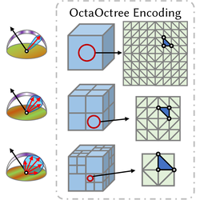
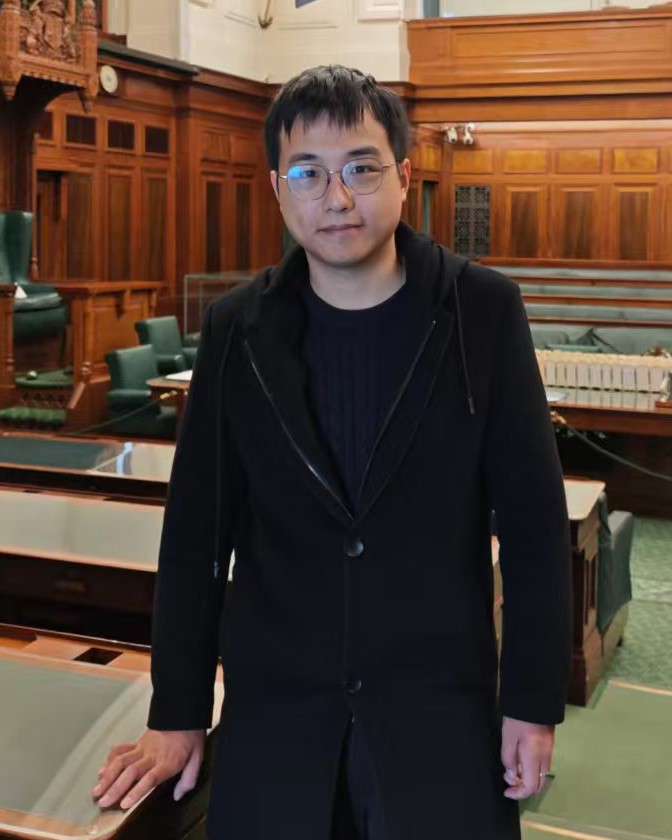
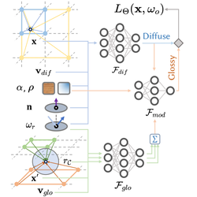

OctaOctree Neural Radiosity for Real-time Glossy Material Rendering
SIGGRAPH Asia 2026 Conference Papers
A spatial–directional data structure with complementary resolution, improving glossy reflections for real-time rendering.
Peking University · Graphics Intelligence Lab
Ph.D. student in Computer Graphics
College of Future Technology, Peking University
Advisor:
Prof. Sheng Li
I am a Ph.D. student at Peking University, advised by Prof. Sheng Li in the Graphics Intelligence Lab. My research focuses on neural rendering, real-time global illumination, and neural scene representations.
I work on Neural Radiosity and its variants, with an emphasis on glossy materials. I am also familiar with ray tracing, real-time methods such as Lumen and DDGI, and renderers including Mitsuba, Falcor, and Unreal Engine 5.


SIGGRAPH Asia 2026 Conference Papers
A spatial–directional data structure with complementary resolution, improving glossy reflections for real-time rendering.

IEEE Transactions on Visualization and Computer Graphics, 2026
Cone-based neural radiosity that models glossy transport more faithfully than prior Neural Radiosity methods, improving quality by over 20%.
IEEE Transactions on Visualization and Computer Graphics, 2026
Learns Russian Roulette and Splitting factors with a hash grid and a small network, reducing variance in wavefront path tracing.
IEEE/CVF Conference on Computer Vision and Pattern Recognition (CVPR) Findings, 2026
A geometry–acoustics dataset for physically consistent sound synthesis and sound-guided geometry optimization.
SIGGRAPH Asia 2024 Conference Papers
Multi-grid baking of dynamic radiosity distributions. I contributed network encoding improvements.
2025.09 – 2026.09
Industry collaboration with Huawei HiSilicon
Built a dynamic glossy neural rendering pipeline on top of Neural Cone Radiosity for real-time, low-noise global illumination of dynamic glossy objects.
2026.07
Tencent Magico Studio
Studied acceleration of Lumen and the feasibility of replacing probe gather with neural global illumination.
2022.09 – 2027.06 (expected)
College of Future Technology, Peking University
Advisor: Prof. Sheng Li · Graphics Intelligence Lab
2018.09 – 2022.06
Shen Yuan Honors College, Beihang University